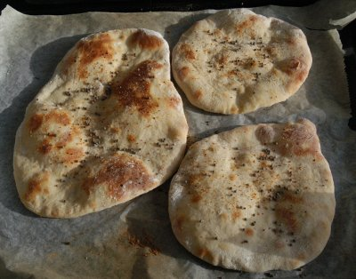

| Zutaten für 4 Personen: | |
| 500 g | Weissmehl |
| 1/2 | Hefewürfel |
| 1 dl | Milch |
| 180 g | Joghurt Nature |
| 2 Tl | Salz |
| 0.5 dl | Sonnenblumenöl |
| 2 Tl | Zwiebelsamen |
Das Mehl in eine Schüssel sieben. In die Mitte eine Mulde machen.
Die Hefe in der Milch auflösen und zum Mehl geben.
Das Joghurt, Salz, Öl dazugeben und zu einem glatten Teig verarbeiten. Eventuell etwas Wasser zugeben.
Zugedeckt um die Hälfte aufgehen lassen.
Aus dem Teig ca. 10 Kugeln formen. Jede Kugel mit einer Prise Zwiebelsamen belegen und oval auswallen. Auf ein Blech legen und im Ofen bei 280°C ca. 5 Minuten backen.
Patricia Krummenacher, Indischer Kochkurs, 2006
So richtig aufgegangen ist mir der Teig nicht aber das Resultat war ganz OK. Ich habe Chili und Senfsamen darüber gegeben. RE 28.5.2011
@LINKBACK_TAG@ @WAKELOCK@